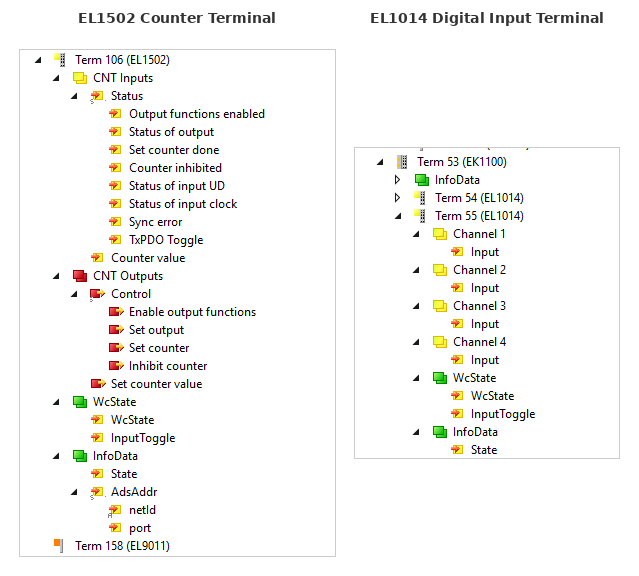

EtherCAT and TwinCAT Nomenclature#
This document explains the terminology used in TwinCAT’s device tree when viewing EtherCAT terminals, and how these concepts map to Beckhoff ESI XML files and our terminal YAML definitions.
TwinCAT Device Tree#
The diagram below shows TwinCAT device trees for different terminal types, illustrating how PDO structure varies by terminal.

EL1502 Counter Terminal#
The EL1502 is a 2-channel counter with complex PDO structure including Status/Control composites and value entries:
├─ Term 106 (EL1502) ← Terminal / EtherCAT Slave
│ ├─ CNT Inputs ← TxPDO (inputs to controller)
│ │ ├─ Status ← PDO Entry (composite)
│ │ │ ├─ Output functions enabled ← Bit field
│ │ │ ├─ Status of output ← Bit field
│ │ │ ├─ Set counter done ← Bit field
│ │ │ ├─ Counter inhibited ← Bit field
│ │ │ ├─ Status of input UD ← Bit field
│ │ │ ├─ Status of input clock ← Bit field
│ │ │ ├─ Sync error ← Bit field
│ │ │ └─ TxPDO Toggle ← Bit field
│ │ └─ Counter value ← PDO Entry (value)
│ ├─ CNT Outputs ← RxPDO (outputs from controller)
│ │ ├─ Control ← PDO Entry (composite)
│ │ │ ├─ Enable output functions ← Bit field
│ │ │ ├─ Set output ← Bit field
│ │ │ ├─ Set counter ← Bit field
│ │ │ └─ Inhibit counter ← Bit field
│ │ └─ Set counter value ← PDO Entry (value)
│ ├─ WcState ← Runtime Symbol Group
│ │ ├─ WcState ← Working Counter state
│ │ └─ InputToggle ← Data freshness toggle
│ └─ InfoData ← Runtime Symbol Group
│ ├─ State ← EtherCAT state machine
│ └─ AdsAddr ← ADS addressing
│ ├─ netId ← Network identifier
│ └─ port ← ADS port
└─ Term 158 (EL9011) ← Next terminal
EL1014 Digital Input Terminal#
The EL1014 is a 4-channel digital input with a simpler per-channel PDO structure. Each channel has its own TxPDO with a single Input entry:
├─ Term 53 (EK1100) ← Bus Coupler
│ └─ InfoData ← Runtime Symbol Group (couplers have limited symbols)
├─ Term 54 (EL1014) ← Terminal (collapsed)
├─ Term 55 (EL1014) ← Terminal / EtherCAT Slave
│ ├─ Channel 1 ← TxPDO (per-channel)
│ │ └─ Input ← PDO Entry (single bit)
│ ├─ Channel 2 ← TxPDO (per-channel)
│ │ └─ Input ← PDO Entry (single bit)
│ ├─ Channel 3 ← TxPDO (per-channel)
│ │ └─ Input ← PDO Entry (single bit)
│ ├─ Channel 4 ← TxPDO (per-channel)
│ │ └─ Input ← PDO Entry (single bit)
│ ├─ WcState ← Runtime Symbol Group
│ │ ├─ WcState ← Working Counter state
│ │ └─ InputToggle ← Data freshness toggle
│ └─ InfoData ← Runtime Symbol Group
│ └─ State ← EtherCAT state machine
Terminology Reference#
Element in Tree |
Terminology |
Description |
|---|---|---|
Term 106 (EL1502), Term 55 (EL1014) |
Terminal / EtherCAT Slave |
A physical device on the EtherCAT bus. Each terminal has a unique position and identity (vendor ID, product code, revision). |
Term 53 (EK1100) |
Bus Coupler |
A special terminal that connects the EtherCAT bus to the fieldbus segment. Has limited symbols (typically just InfoData). |
CNT Inputs |
TxPDO (Transmit PDO) |
Process Data Object transmitted FROM the terminal TO the controller. These are your inputs (read-only from the controller’s perspective). |
CNT Outputs |
RxPDO (Receive PDO) |
Process Data Object received BY the terminal FROM the controller. These are your outputs (read/write from the controller’s perspective). |
Channel 1, Channel 2, etc. |
TxPDO (per-channel) |
Some terminals organize PDOs by channel rather than combining them. Each channel is a separate TxPDO. |
Status |
PDO Entry (composite) |
A structured entry within the PDO containing multiple bit fields packed together. In TwinCAT, this becomes a composite type. |
Output functions enabled, Status of output, etc. |
PDO Entry Fields / Bits |
Individual fields (often single bits) within a Status or Control word. |
Counter value |
PDO Entry (value) |
A data entry within the PDO, typically 16 or 32 bits representing a measured or computed value. |
Input |
PDO Entry (single bit) |
A simple single-bit input, common in digital input terminals like the EL1014. |
Control |
PDO Entry (composite) |
A structured entry containing control bits that command the terminal’s behavior. |
Set counter value |
PDO Entry (value) |
An output value to write to the terminal. |
WcState |
Runtime Symbol |
Diagnostic symbol added by the EtherCAT Master at runtime. Indicates communication health (Working Counter state). Not defined in Beckhoff XML. |
InputToggle |
Runtime Symbol |
Toggles each EtherCAT cycle to indicate data freshness. Added by the EtherCAT Master. |
InfoData |
Runtime Symbol Group |
Diagnostic information group added by the EtherCAT Master. |
State |
Runtime Symbol |
EtherCAT state machine state (Init, Pre-Op, Safe-Op, Op). |
AdsAddr |
Runtime Symbol Group |
ADS addressing information for the terminal. |
netId, port |
Runtime Symbols |
Network identifier and ADS port for direct terminal communication. |
Key Concepts#
PDO (Process Data Object)#
PDOs are the cyclic I/O data exchanged every EtherCAT cycle. They contain the real-time process data.
TxPDO = “Transmit” from the slave’s perspective → controller inputs (read-only)
RxPDO = “Receive” from the slave’s perspective → controller outputs (read/write)
PDO Entry#
A single data item within a PDO. Can be:
A single bit (e.g., status flags)
A primitive value (BOOL, INT, UINT, DINT, etc.)
A composite structure grouping multiple fields (e.g., Status word with bit fields)
Runtime Symbols#
Symbols added by the EtherCAT Master at runtime that are not defined in Beckhoff’s ESI XML files. These provide diagnostics and addressing information:
WcState- Working Counter state for communication healthInputToggle- Data freshness indicatorInfoData- State machine and addressing info
Mapping to ESI XML#
In Beckhoff’s ESI XML files:
TwinCAT Tree |
XML Element |
|---|---|
Terminal (EL1502) |
|
CNT Inputs |
|
CNT Outputs |
|
Status, Counter value, etc. |
|
Individual bits |
|
Example XML structure:
<TxPdo Fixed="1" Sm="3">
<Index>#x1a00</Index>
<Name>CNT Inputs Channel 1</Name>
<Entry>
<Index>#x6000</Index>
<SubIndex>1</SubIndex>
<BitLen>1</BitLen>
<Name>Status__Output functions enabled</Name>
<DataType>BOOL</DataType>
</Entry>
<Entry>
<Index>#x6000</Index>
<SubIndex>17</SubIndex>
<BitLen>16</BitLen>
<Name>Counter value</Name>
<DataType>UINT</DataType>
</Entry>
</TxPdo>
Mapping to Terminal YAML#
In our terminal YAML definitions:
TwinCAT Tree |
YAML Section |
|---|---|
Terminal identity |
|
TxPDO/RxPDO entries |
|
Runtime symbols |
Defined in |
CoE parameters |
|